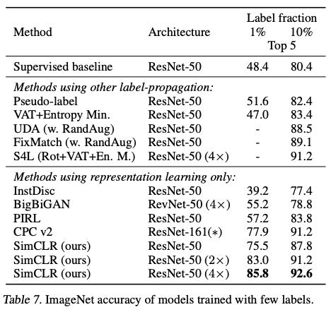

Chen ICML’20 SimCLR (A Simple Framework for Contrastive Learning of Visual Representations)¶
著者 Ting Chen, Simon Kornblith, Mohammad Norouzi, Geoffrey Hinton (Google Research)
Abstract¶
既存のSelf-Supervised Learning(SSL)の手法(CPC, AMDIM, CMC, MoCo)は複雑だった
SimCLRはとてもシンプルで、SSL及び半教師付き学習の精度を大幅に更新した
{kind=link}
図1: それぞれの手法でSSL後、モデルの出力を特徴量に線形モデルを学習し、その精度を比較 (Linear Evaluation)
Algorithm¶
ざっくりいうと、以下のような contrastive learning をやっている
同じ画像に対して augmentation (どこをクロップするかなどの乱数がある) を2回行い、それをpositive pairにする
ミニバッチにある、別の画像(をaugmentationしたもの)をnegativeにする
positive pairの距離は小さくなるように、negative pairの距離は大きくなるようにモデルを学習する
{kind=link}
augmentationの種類

少量の教師データを使ったfine tuneタスクでも強い
{kind=link}
同じクラスの画像をnegativeとして学習しちゃうのはどうなの
クラスタリングを使ってその課題を緩和する手法はある: 例えば SwAV (https://arxiv.org/pdf/2006.09882.pdf)
先行研究: MoCo¶
Momentum Contrast for Unsupervised Visual Representation Learning
Kaiming He, Haoqi Fan, Yuxin Wu, Saining Xie, Ross Girshick (Facebook AI Research (FAIR))
End-to-End (SimCLRのようなやつ)はメモリを使うのでミニバッチサイズ大きくできない
Algorithm¶
初期値が一緒の encoder(f_q) と momentum encoder (f_k) を用意する
以下繰り返し
同じ画像に対して 別々のaugmentationを2回行い、それぞれをencoderとmometum encoderに通す
momentum encoder を通したほうをqueueに入れておく
それらをpositive pair、 encoderに入れたものとqueueに入っているものをnegative pairにして metric learningする
ただし、momentum encoder の方はstop gradientしておく (勾配を伝搬させない (optimizerの更新対象から外す))
momentum encoderのパラメータは momentum updateする (m * f_k.params + (1-m) * f_q.params で更新)
{kind=link}
stop gradientするからminibatch sizeを大きくできる
{kind=link}
あれSimCLRってだたのEnd-to-Endってじゃないか?
SimCLRのContributionって何だったのか¶
augmentationの組み合わせが非常に重要だという知見
{kind=link}
行: 1回目のaugmentation, 列: ２回目のaugmentation, 色: Linear Evaluationの精度
cropとcolorの組み合わせが際立って強い
{kind=link}
color distortion strengthも重要
supervised learningだとそうではない、supervisedで強いAutoAugmentationもSSLでは強くない
Non linear projection
{kind=link}
Non linear projection (MLP: 全結合→BN->ReLU→全結合->BN) が強い
他にもBatch size、損失関数、損失関数の温度パラメータ、epoch数とかいろいろ実験している
感想¶
何か新しいことをやったという気はしない
SSLの火付け役的なイメージだった(なんかAlgorithm自体が今までに無いものだと思っていた)
先行研究の論文も読んでみるとSimCLRの貢献はすでにある手法の組み合わせでSSLの強さを引き出したこと
Augmentation がとても重要ということを教えてくれた (自然言語でもいけるぜとはぜんぜん思えない)